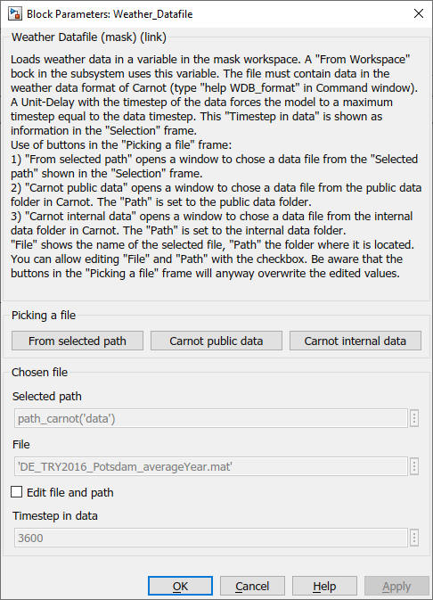

Weather_Datafile
Path: CARNOT/Weather
Purpose:
Read weather data from a data file.
Description:
The block loads weather data from a *.mat, *.txt, *.dat, *.csv or ascii-file in a
variable in the mask workspace. The signal is converted to the Weather Data Bus
(WBD).
A "From Workspace" bock in the subsystem uses
this variable to create a time dependant signal in Simulink (see Simulink "From
Workspace" block for details). The file must contain contain weather data in the
Carnot weather data format (see WDB_format.m or type
help WDB_format in the command window).
A Unit-Delay with the timestep of the data forces the
model to a maximum timestep equal to the data timestep. This "Timestep in data"
is shown as information in the "Selection" frame.
The block is typically used to read test reference years, e.g. try-format of DWD [DWD 2017], [DWD 2014], tmy-format or Meteonorm [Meteonorm 2019]. Some scripts are available in Carnot to convert other formats to WDB format (see chapter 2.1.3 Weather Data Bus).
Some data records are available in carnot\public\data. See chapter 2.6 Weather Data Records for details.
Hint: General data like electric load profiles can be read in the
model with the Data_from_File block in CARNOT/Load/General.
Parameters

"Picking a file" frame
Use of buttons :
1) "From selected path" opens a
window to chose a data file from the "Selected path" shown in the "Selection"
frame.
2) "Carnot public data" opens a window to chose a data file from the
public data folder in Carnot. The "Path" is set to the public data folder.
3)
"Carnot internal data" opens a window to chose a data file from the internal
data folder in Carnot. The "Path" is set to the internal data folder.
"Chosen file" frame
"File"
shows the name of the selected file, "Path" the folder where it is located.
Characteristics
Input: none
Output: WDB
Used functions: CarnotCallbacks_Data_from_File.m
See also: Meteonorm2wformat.m, MeteonormMinute2wformat.m,
tmy2wdb.m, try2wdb.m, dwd2wdb.m
Similar blocks: Weather_from_Workspace, Data_from_File, mdot_DHWcalc
Literature
DWD 2017: Test reference
years for Germany, Deutscher Wetter-Dienst: Ortsgenaue Testreferenzjahre (TRY)
von Deutschland für mittlere und extreme Witterungsverhältnisse
https://www.dwd.de/DE/leistungen/testreferenzjahre/testreferenzjahre.html
(access: 08/05/2020)
https://www.bbsr.bund.de/BBSR/DE/FP/ZB/Auftragsforschung/5EnergieKlimaBauen/2013/testreferenzjahre/01-start.html
(access: 08/05/2020)
DWD 2014: Test reference years based on the 2011
data; Handbuch Testreferenzjahre von Deutschland für mittlere, extreme und
zukünftige Witterungsverhältnisse; Bundesamtes für Bauwesen und Raumordnung
(BBR), Climate & Environment Consulting Potsdam GmbH; Deutschen Wetterdienst
(DWD)
https://www.bbsr-energieeinsparung.de/EnEVPortal/DE/Regelungen/Testreferenzjahre/Testreferenzjahre/TRY_Handbuch.pdf?__blob=publicationFile&v=2
(access: 08/05/2020)
Meteonorm 2019: Database for timeseries of weather data, Meteotest, https://meteonorm.com/
Energy Plus 2020: https://energyplus.net/weather (access: 08/05/2020)
Characteristics:
| Direct Feedthrough | : | No |
| Sample Time | : | Continuous |
| Vectorized | : | Yes |